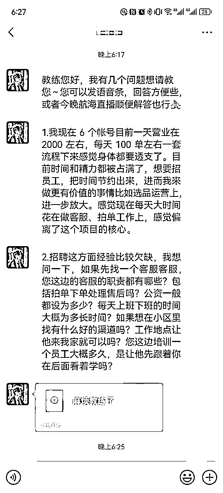

来源：https://qingling21.feishu.cn/docx/F3ZEderGaoabeyxctJncVyysnaf
大家好，我是老瞿Qu，生财有术最懂二手书的男人，也是本次闲鱼二手书航海和续航的教练。当有一天我收到这样一条微信的时候，我知道是时候给大家来一篇闲鱼二手书2.0的分享了，让我们一起从月入过W到年入100W。

因为被圈友多次表白喜欢老瞿的文风，所以本次依旧会采用问答式的写作手法，因为我也不喜欢论文式的废话。
根据我前期实战经验，一般一个人一天在100-150单左右的时候，就会到达一个人的极限，按照我工作室统计的数据，平均一单的利润在8-10元左右，也就是一天1000+的利润，一个月在2-3W+左右。
所以上面这个续航学员，其实基本上已经快达到了个人做闲鱼二手书的天花板了，而且目前是淡季，如果遇到9月份开学季，基本上单量会翻2-3倍。
可能会有人说，闲鱼这个项目的天花板有点低。
对，闲鱼的天花板就是相对比较低，这也是我曾经多次准备放弃闲鱼这个项目的一个重要的理由，而且还累。
当然因为最后没有找到其他更赚钱的项目，所以才坚持下去了，才有机会成为生财最懂二手书的男人。
但是我们反过来想，其实也正是因为这个项目相对繁琐，所以才让很多大佬和资本不屑进场，让我等电商小白也能月入个几万块钱。
所以我们一定要做一个项目爱一个项目。
你选择了出单较为容易的闲鱼，就要接受他的繁琐和较低的天花板，如果你选择了天花板高的个人IP，就要接受你可能前3-6个月赚不到钱。
这也是为什么比如老瞿这样的过来人，一般建议大家刚开始的时候从一些变现较为容易的项目入手，而不是上来报个IP训练营。
可能有人会问，一个人的极限就是6个帐号吗？
当然不是，其实关键还是根据你订单数量决定的，因为等你单子多一点，你会发现在这个项目中，处理订单，买书，售后咨询才是占据时间最多的环节。
比如开发闲助手的圈友华少的套路就是一个人运营18个帐号，但是他基本上躺平式经营，这也是一种选择，加上有自己的系统助力，可能他的18个号，比上面这个同学的6个帐号订单就多一点点，所以影响你速度的是订单数量。
接下来就是这篇文章的重点，聊聊当你达到个人闲鱼二手书项目的天花板以后，应该如何通过工作室进行放大。
还在第一个阶段的一定要努力，你可以这样：
“拿起你的右手放在自己心脏的位置，问问自己付出的努力真的有超越了群里80%的人吗”
工作室放大的核心其实就是两点：
首先就是将工作流程进行拆分，把一些机械的劳动外包给更加廉价的劳动力。
其次就是怎么尽可能降低人员成本，并做好人员的管理。
在闲鱼二手书这个项目中，在做好前期的办证，帐号包装以后，我们根据项目流程，可以把项目分为3个部分：
第一部分：书籍的选品和上架
第二部分：客服接单，以及售后处理
第三部分：订单的处理，包含拍单和发货
工作流程拆分的过程中，我们要考虑到具体的工作，比如我们一直强调一机一号，所以手机是必须留在工作室的，闲鱼APP帐号不能到处登录，但是闲管家后台网页版是可以开小号，没有影响的。
所以当我们把手机留在工作室以后，就意味着客服这个岗位，我们需要留在工作室，然后把前后两端的工作拆分出去，这样客服可以在我们眼皮底下，提升沟通效率，起到一个协调的作用。
在航海手册中我就有说过，二手书跟其他闲鱼玩法一个最大的区别就是选品，因为书籍比如大学教材基本上3-5年不会出新版。文学小说基本上是经典书籍畅销10年以上，比如《平凡的世界》。
所以我们选品的逻辑就主要参考孔夫子销售排行版，以及淘宝一些大的二手书店铺的排行版，还有适当的结合豆瓣、当当、抖音的一些新书的排行版，没有那么多花里胡哨的东西。
所以在这个项目里面，选品定生死这句话依旧有效，毕竟你不能选择一些冷门书籍，但是选品没有问题，运营不好依旧会死，因为爆款的二手书其实差别不会太大，别人有流量，你不一定有。
而且上架和优化书籍，其实对时间及时性的要求不是很高，因为之前我们仓库有暑假实习生，所以后来就演变成上架书和优化商品交给大学生兼职去做，20块钱一个小时，每天来领任务。
大学生：廉价劳动力的主要代表，他们一般去肯德基端盘子，大概的收入也在20左右一小时，而且还需要来回路上的时间消耗，所以他们特别乐意有这样的长期线上的兼职，而且脑子比较灵活，接受新事物的能力强。
所以后来我们工作室基本上演变成隔壁2个宿舍的女生，6个人拉一个小群对接，机动进行上书，每天一个人大概平均抽3个小时出来。
而且基本你只要教会其中一个人，就可以让她去培训其他人，也都是比较乐意。
大家肯定关心的是怎么控制上书的数量和质量？
质量主要靠培训，你把自己平时怎么做的，对他们进行培训，数量的话前期没有用华少的软件的时候，效率低一些，基本要求是一个小时20-25本书，后面用了软件效率会高很多，上满以后更注重给一些书籍增加多SKU。
你可以先自己去测试一下速度，无论还是新上，还是优化，然后把要求下达给他们，关于选品和定价方式，还是参考自己平时的习惯，这样比较容易管理。
一个月下来一个学生的收入大概在1500左右，6个学生在小1W左右的工资，负责30+个帐号的上书和优化工作。
这里提醒一点，就是之前很多人在没有跑通第一个阶段，就想开工作室，其实个人不是太建议，因为你根本不知道怎么去管控员工，所以一定是自己熟悉流程，再去拆分，才能更好的管控，提升效率。
另外从实测效果来看，学生上架书籍问题不大，但是下架优化书籍存在一个问题，就是闲管家看不到商品的曝光量、浏览量和想要个数，闲鱼APP才能看到，他们只能看到销量，客服对接起来相对会麻烦一点。
目前我个人是在倒逼华少自己开发的软件，能增加相应的功能，便于在后台能看到商品曝光量、浏览量和想要的个数，应该近期就会有结果。
所以之前需要客服先下架一波，然后让学生再来进行下架和补充。
这部分同第一部分一样，在闲鱼管家就能解决，而且基本上当天的订单，当天处理完成即可。
因为大部分孔夫子的商家是当天3点以前的订单，当天发货。3点以后的订单，第二天才进行发货。所以一般上午买一波，下午和晚上把今天的全部处理完即可。
我们测试下来，基本上一个人一小时可以买20单左右，看多本订单的占比。
这部分工作学生不是太合适，因为学生上课时间不确定，有时候忙起来就一天只有2-3个小时，就没有办法处理订单。
由于我的工作室开在本小区的，有一天我在小区一个300人的群里发了一个招聘广告，时间久了，找不到截图了，大概的意思是：
“夫妻2人在本小区开了个工作室，主要做电商项目，招聘5个宝妈处理订单，工作室培训一周以后可以在家办公，时间自由，但没有五险一金，工资3000左右。”
结果300人微信群，第二天来了30个面试的，隔壁小区的都来了，当时真实吓到我了。
基本上都是在家的宝妈，孩子已经小学了，平时没有什么事情，但是上班吧时间又不允许，大多数没有收入，所以哪怕在南京这种准一线城市，没有社保公积金，3000也能接受，就图一个时间自由。
后续工作的基本要求是：每天上午统计负责的帐号有多少订单反馈到对接群，每天处理100单订单，中午12点前和晚上12点前分别在群里汇报进展。
因为二手书每周五、周六的生意最差，所以周一到周五正常处理订单，周六休息，周日需要抽2个小时，把客服在闲管家后台标注的急单给买掉。
大家应该最关心的就是如果宝妈买书，选了价格很高的没有利润了怎么办？
1、这个就在于定好游戏规则，比如利润少于5块钱的不要买，标注让客服处理。
2、自己抽查宝妈买书的水平，遇到有问题的，比如价格买太高了，需要进行纠正，前期招聘的时候强调，如果发现问题不改正，将予以辞退。
大多数情况下，大家是相对负责和认真的，一般宝妈需要5-6个小时处理100个订单，上午送完孩子会抽几个小时，下午接娃放学前抽几个小时，偶尔可能晚上孩子睡了还要加个班。
在这个项目的3个环节中，客服是最重要的，因为工作内容相对灵活，所以会采用正常上班的形式，工资相对较高，加上五险一金，南京基本上花费在6000左右。
主要负责接单和处理售后问题和APP上一些闲鱼任务，比如金币推广，但是当你订单多了以后，一般那种帮忙找书的订单，以及问题特别多的客户的订单都不接，这样能大大的降低售后的概率。
细节：一般上午的订单较少，所以尽可能让客服能够晚点上班，然后客服的时间进行一定的错开，工作到晚上10点左右，这样是目前测试下来感觉效率相对高的，比如轮流上到晚上10点。
以上就是主要的工作流程拆分，和上书、客服、拍单三个角色的人员成本情况。
初算的话，30个帐号，每个月平均下来，单个帐号的销售额在15000-20000左右，利润率30%就是在5000左右，然后30个帐号一个月的利润在150000。
人工成本在学生上书10000，客服12000，拍单15000，房租2000，最终月度利润在10W+。具体每个月会有些起伏，开学季能冲到20W左右每月的利润。
当然上书也可以找全职，其实闲鱼二手书这种项目，放在小地方会更加有优势，比如我见过一个人在县城镇上开工作室，客服一个月工资就2000，这样利润会更加高一些。
总之就是将流程拆解，然后将人员成本尽可能的控制，这样才能将利润最大化。上述人员配置是相对比较轻松的，基本上不需要自己做太多东西，负责管理下就好。
也可能有人会说，一个人的利润都能做到2-3万，10个人的配置，才只能做到10W+利润，其实员工和自己加班加点干的区别还是很大的，在前期我干的快要放弃的时候，就是和老婆两个人，也可以做到一个月4-5W的利润，但是真的很累，开学季肯定睡工作室熬夜的。
所以看你最后的选择吧，成年人选择什么就接受什么。选择学生和宝妈最大的好处就是都是临时工，算是兼职。而且我在跟宝妈和学生谈的时候，提前说好，兼职，如果单子少，随时暂停他们的工作。尽可能少招聘全职员工，这样风险更容易得到控制。当然你也可以选择全职员工。
我是老瞿，2023年我们一起生财有术。